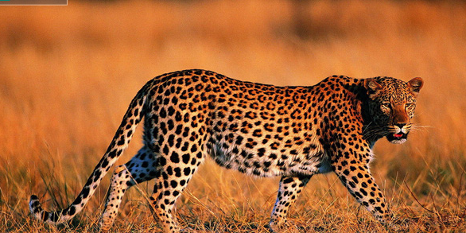

Báo Viễn Đông
1.báo Viễn Đông
Báo đốm châu Mỹ (Danh pháp khoa học: Panthera onca) được biết đến với cái tên tiếng Anh phổ biến là “Jaguar” là một trong bốn loài lớn nhất của họ nhà Mèo bên cạnh sư tử, hổ và báo hoa mai, là loài duy nhất trong số bốn loài này có nguồn gốc ở khu vực châu Mỹ. Phạm vi hiện tại của báo đốm kéo dài từ Tây Nam Hoa Kỳ và Mexico ở Bắc Mỹ, qua phần lớn Trung Mỹ, và phía nam đến Paraguay và miền bắc Argentina ở Nam Mỹ. Mặc dù có những cá thể riêng biệt hiện đang sống ở phía tây Hoa Kỳ, loài này phần lớn đã bị tuyệt chủng khỏi Hoa Kỳ kể từ đầu thế kỷ 20. Chúng được liệt kê là loài sắp bị đe dọa trong Sách Đỏ IUCN; và số lượng của chúng đang giảm dần. Các mối đe dọa bao gồm bị mất và phân mảnh môi trường sống. Báo đốm còn là loài mèo lớn nhất châu Mỹ và là loài có kích thước lớn thứ ba trong họ nhà mèo (chỉ sau hổ và sư tử), chúng là loài mèo có lực cắn mạnh nhất và có phương pháp tấn công vào đầu nạn nhân thay vì cổ họng. Mặc dù báo đốm Mỹ có ngoại hình tương tự báo hoa mai (Leopard) và có quan hệ họ hàng gần với loài này, chúng cũng rất giỏi leo trèo, nhưng có các tập tính gần với hổ hơn (nhất là tập tính thích nước). Sự khác biệt dễ nhận thấy giữa báo đốm và báo hoa mai ở chỗ là chúng có kích thước lớn hơn và chắc nịch hơn, ngoài ra các khoanh đốm của báo đốm to hơn và bên trong khoanh đốm có các chấm đen vì vậy mới gọi là báo "đốm", chúng cũng có cặp chân ngắn và lùn hơn, đuôi ngắn hơn so với loài báo hoa mai vốn có thân hình dong dỏn cao và đuôi dài hơn, các khoanh đốm của báo hoa mai chụm lại giống như hình bông hoa mai. Báo đốm sống trên một loạt các địa hình có rừng và những nơi có không gian mở, nhưng môi trường sống ưa thích của chúng là rừng lá rộng ẩm nhiệt đới và cận nhiệt đới, đầm lầy và các khu vực nhiều cây cối. Báo đốm thích bơi lội và phần lớn là loài săn mồi đơn độc, tấn công mục tiêu theo kiểu tận dụng cơ hội, rình rập và phục kích, là động vật đứng đầu chuỗi thức ăn ở nơi mà chúng sinh sống. Là một loài chủ chốt, chúng đóng một vai trò quan trọng trong việc ổn định hệ sinh thái và điều chỉnh quần thể con mồi.
2.Phân loài
Năm 1758, Carl Linnaeus đã mô tả con báo đốm trong tác phẩm Systema Naturae và đặt cho nó cái tên khoa học Felis onca. Trong thế kỷ 19 và 20, một số mẫu vật báo đốm đã hình thành cơ sở cho các mô tả phân loài. Năm 1939, Reginald Innes Pocock đã công nhận tám phân loài dựa trên nguồn gốc địa lý và hình thái hộp sọ của các mẫu vật này. Pocock đã không có quyền truy cập vào các mẫu vật động vật học đủ để đánh giá phê bình tình trạng phân loài của chúng, nhưng bày tỏ nghi ngờ về tình trạng của một số loài. Sau này xem xét công việc của mình đề nghị chỉ có ba phân loài nên được công nhận. Mô tả của P. o. palustris dựa trên hộp sọ hóa thạch. Tác giả của các loài động vật có vú trên thế giới liệt kê chín phân loài và cả P. o. palustris hoặc P. o. paraguensis riêng biệt. Kết quả nghiên cứu hình thái và di truyền học cho thấy một biến thể phía nam clinal giữa các quần thể, nhưng không có bằng chứng cho sự khác biệt phân loài. Một nghiên cứu chi tiết hơn sau đó đã xác nhận cấu trúc số lượng dự đoán trong quần thể báo đốm ở Colombia. Những người đánh giá Sách Đỏ IUCN cho các loài và thành viên của Nhóm Chuyên gia thú họ Mèo không công nhận bất kỳ phân loài báo đốm nào là hợp lệ. Bảng dưới đây dựa trên phân loại trước đây của các loài được cung cấp trong các loài động vật có vú trên thế giới.